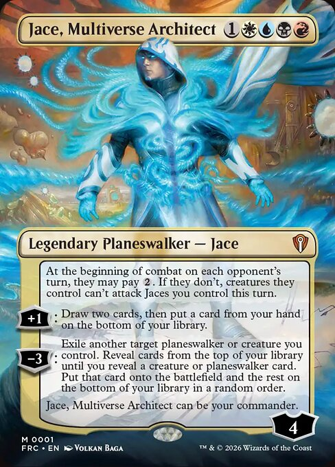
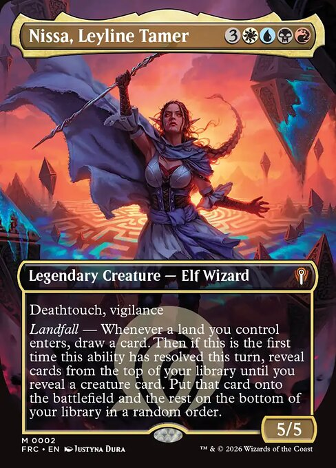

Magic the Gathering New Reality Fracture Precon
This is a page all about what in the new reality fracture precon!
Introduction to Magic: The Gathering
What is the Commander Format?
Commander: Jace, Multiverse Architect/Nissa, Leyline Tamer


Deck List
lands (39)
- 1 Battlefield Forge
- 1 Caves of Koilos
- 1 Clifftop Retreat
- 1 Command Tower
- 1 Contaminated Landscape
- 1 Drowned Catacomb
- 1 Exotic Orchard
- 1 Fabled Passage
- 1 Fetid Heath
- 1 Glacial Fortress
- 1 Isolated Chapel
- 1 Kher Keep
- 1 Mystic Gate
- 1 Path of Ancestry
- 1 Perilous Landscape
- 1 Prairie Stream
- 1 Radiant Summit
- 1 Reflecting Pool
- 1 Restless Anchorage
- 1 Restless Spire
- 1 Shivan Reef
- 1 Sulfur Falls
- 1 Sulfurous Springs
- 1 Sunken Ruins
- 1 Turbulent Crater
- 1 Turbulent Shore
- 1 Turbulent Wetlands
- 1 Underground River
- 4 Plains
- 3 Island
- 2 Swamp
- 2 Mountain
Creatures (18)
- 1 Akroma, Angel of Fury
- 1 Archfiend of Despair
- 1 Archon of Cruelty
- 1 Avacyn, Angel of Horror
- 1 Dack Fayden, Helping Hand
- 1 Darksteel Angel
- 1 Ginger, Queen of Sweets
- 1 Jhoira, Weatherlight Corsair
- 1 Memnarch, the Warden
- 1 Niv-Mizzet, Ghost Counsel
- 1 Ob Nixilis, the Ascended
- 1 Omnath, Locus of the Void
- 1 Overlord of the Mistmoors
- 1 Serra's Emissary
- 1 Tamiyo, Upriser Crowned
- 1 The Ur-Sphinx
- 1 Venser, Fervent Forger
Instants & Sorceries (19)
- 1 Brainstorm
- 1 Brainsurge
- 1 Despark
- 1 Fact or Fiction
- 1 Fatehold Charm
- 1 Flawless Maneuver
- 1 Grand Crescendo
- 1 Lingering Souls
- 1 Martial Coup
- 1 Mass Polymorph
- 1 Occult Epiphany
- 1 Path to Exile
- 1 Secure the Wastes
- 1 Stroke of Midnight
- 1 Sunfall
- 1 Swords to Plowshares
- 1 Synthetic Destiny
- 1 Teferi's Reproach
- 1 White Sun's Twilight
Artifacts & Enchantments (22)
- 1 Arcane Signet
- 1 Azorius Signet
- 1 Chromatic Lantern
- 1 Currency Converter
- 1 Cursed Mirror
- 1 Dimir Signet
- 1 Dreadhorde Invasion
- 1 Elspeth, Sun's Champion
- 1 Fellwar Stone
- 1 Izzet Signet
- 1 Plan for All Outcomes
- 1 Proteus Staff
- 1 Rakdos Signet
- 1 Shark Typhoon
- 1 Skrelv's Hive
- 1 Sol Ring
- 1 Staff of the Storyteller
- 1 Talisman of Creativity
- 1 Talisman of Dominance
- 1 Talisman of Indulgence
- 1 Talisman of Progress
- 1 Whirlwind of Thought
- 1 Windcrag Siege
How to Play the Deck
- Generate expendable creature tokens early in the game.
- Use polymorph/swap spells to transform small tokens into massive threats.
- Cheat out high-impact, alternate-reality versions of iconic Magic characters!